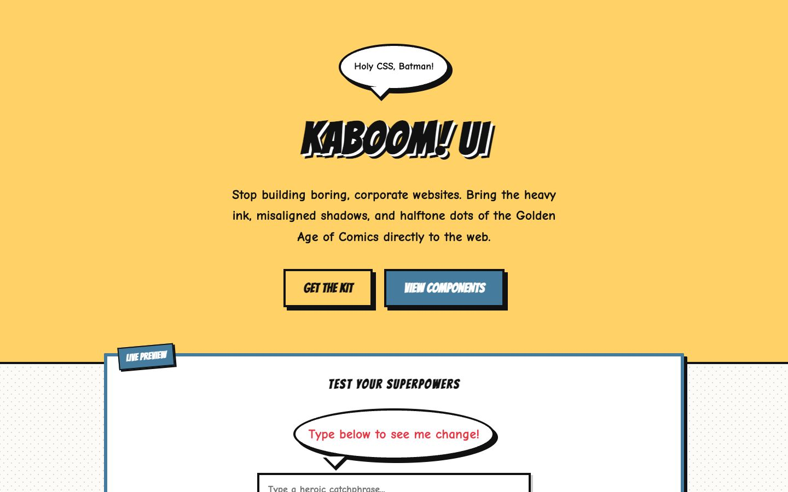

References / Website / 223
KABOOM! UI website
The demo site of a comic-book CSS framework: speech balloons, a sound-effect logotype, a dot-patterned background, and outlined buttons with hard shadows.
- Source
- KABOOM! UI: kaboom-ui-kit.pages.dev
- Creator
- Gorupa
- Styles
- Pop art (agent-proposed, not yet reviewed by a person), Neo-brutalism (agent-proposed, not yet reviewed by a person)
- Moods
- Playful, loud, retro
- Evidence
- Captured with
tools/capture.mjs(headless Chrome, 1440 × 900) on 28 September 2026 and inspected. Nothing covers the page. - Reviewed
- Rights
- Third-party work, stored with credit for commentary. License: unverified. Rights policy
Context
The author describes KABOOM! UI as a CSS framework inspired by 1962 comic books, with buttons, cards, badges, speech bubbles, halftone backgrounds, ink borders, and offset shadows. DEV Community.
Observed
- The hero is flat pale yellow. A white oval speech balloon with a black outline and a tail reads “Holy CSS, Batman!”.
- The logotype “KABOOM! UI” is set in a condensed, slanted comic face in black with a white inline and a black drop.
- Two buttons read “GET THE KIT” (yellow) and “VIEW COMPONENTS” (steel blue); both have black outlines and hard black offset shadows.
- Below the hero, the page background is a pale gray dot pattern on white.
- A white panel with a steel-blue border carries a tilted “LIVE PREVIEW” label, a heading in comic capitals, and a second speech balloon with red text.
Why it belongs
The CSS dot field covers 39% of the page (color.patternShare 0.39), which passes the Pop fingerprint, but the extractor records surface.patternShare 0, a 2 px median border, and shadows on 43% of boxes.
The site shows how easily web Pop slides into neo-brutalism: once every block has an offset shadow, the Pop devices become decoration on a neo-brutalist frame.
Borrow
Use an oval speech balloon with a tail as a tagline above the logotype.
Put the dot pattern behind content panels, and keep text on solid white.
Measured
Machine-extracted by tools/extract-traits.js on . Full measurement.
- Type families
- Comic Neue (77%), Bangers (21%), Muli (2%)
- Type scale ratio
- 1.2
- Median radius
- 0 px
- Mean chroma
- 0.13
- Palette
- #fdfbf7 67%
- #ffd166 15%
- #111111 14%
- #06d6a0 2%
- #457b9d 1%
- #e63946 1%
- #0000ff 0%
- #555555 0%

